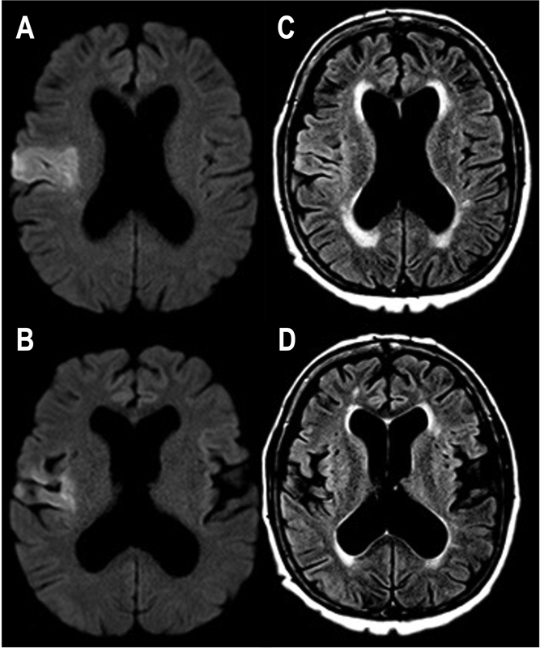

Página 7 · E8
AVE fresco flácido: o falso segundo
“Muitos leem flácido + sem reflexo no AVE agudo e topografam 2º NMS definitivo.”
A pegadinha do primeiro minuto
No agudo de lesão de 1º NMS (ex.: AVE isquêmico recém-ocorrido), o paciente pode estar flácido, sem força e sem reflexo — igual ao 2º no primeiro momento.
A síndrome piramidal “clássica” (espasticidade, hiperreflexia etc.) se organiza com o tempo: minutos, horas, dias, semanas ou até meses.
Regra de ouro da porta
Quadro agudo de 1º (AVE, TCE, trauma medular etc.) não deve ser topografado só pelo exame do primeiro minuto como se fosse 2º NMS definitivo.

Quiz — fixação
-
Paciente com AVE isquêmico há 40 minutos: hemicorpo flácido e hiporreflexo. Conclusão correta:
Gabarito B. o agudo do 1º imita o 2º; a piramidal se organiza depois.
A fecha cedo; C/D andares/conclusões erradas. aplicar a matriz crônica no minuto zero.
-
A organização da síndrome piramidal clássica:
Gabarito B. o 1º NMS pode iniciar flácido e só depois organizar hiperreflexia e espasticidade.
A nega a pegadinha; C/D inventam. achar que “sem Babinski no D0 = não é 1º”.